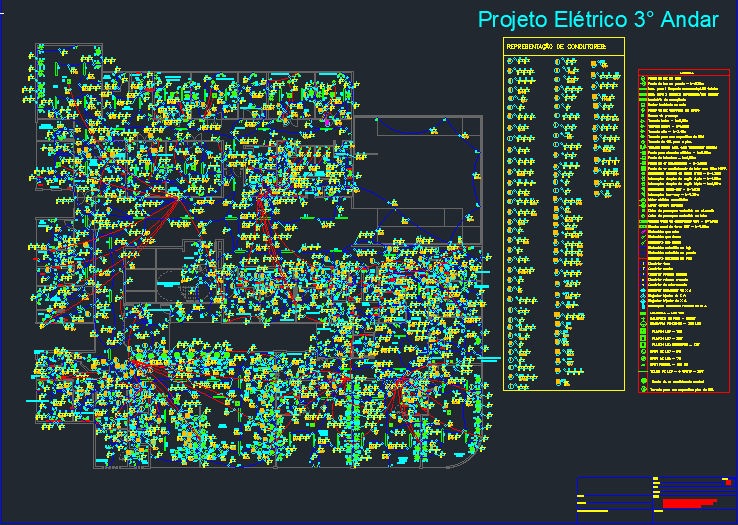
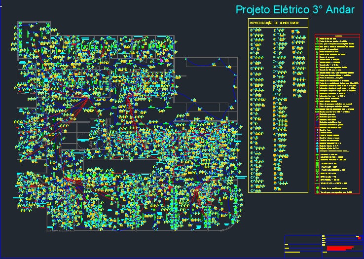

Sobre Mim
Sou estudante de Engenharia Elétrica na UFSJ e, durante minha atuação na EJEL, participei do desenvolvimento de projetos elétricos e fotovoltaicos, com foco em dimensionamento de cargas, quadros de distribuição e integração de sistemas elétricos e de automação. Além disso, desenvolvi habilidades em softwares como AutoCAD e Excel para visualização e cálculos técnicos, contribuindo para a eficiência e precisão dos projetos. Busco oportunidades para aplicar meus conhecimentos técnicos e minha experiência em projetos desafiadores e inovadores na área de engenharia elétrica.
Projetos
Projeto Elétrico 01
Projeto Elétrico e de Rede Lógica – Residência de Alto Padrão
Desenvolvimento de um projeto elétrico para uma residência de alto padrão, de dois andares, seguindo as normas da CEMIG. O projeto incluiu o dimensionamento do Quadro de Distribuição de Carga (QDC), considerando uma estação de carregamento para veículo elétrico, Tomadas de Uso Específico (TUE) para máquinas industriais e a instalação de sistemas de ar-condicionado em todos os cômodos, evidenciando a alta complexidade da edificação. Além disso, foi realizada a integração do projeto de rede lógica com o projeto elétrico, garantindo a alocação eficiente dos pontos de internet, câmeras de segurança, televisores e rede telefônica. O projeto foi entregue com excelência e obteve uma avaliação de satisfação nota 10.

Projeto Elétrico 02
Projeto Elétrico – Prédio de 4 Andares
Desenvolvimento do projeto elétrico para um edifício de quatro andares, composto por duas lojas no térreo e dois apartamentos nos andares superiores. O projeto incluiu o dimensionamento do diagrama unifilar, cálculo do quadro de cargas, agrupamento coletivo e elaboração da planta de situação. Trata-se de um projeto de alta complexidade e padrão elevado, exigindo precisão no planejamento e execução para garantir eficiência e segurança na instalação elétrica.


Projeto Elétrico 03
Projeto Elétrico – Pousada de Alto Padrão em Tiradentes
Desenvolvimento do projeto elétrico para uma pousada de alto padrão em Tiradentes, um projeto de grande relevância pessoal e profissional. A complexidade do projeto se deu pelo dimensionamento individual dos Quadros de Distribuição de Carga (QDCs) para cada quarto, garantindo maior eficiência e segurança na distribuição elétrica. Além disso, a pousada foi projetada para atender às demandas modernas de mobilidade sustentável, incluindo um estacionamento com infraestrutura para carregamento de veículos elétricos. Esse projeto representa não apenas um desafio técnico, mas também um marco significativo, pois contribuirá para a transformação do local em um espaço sofisticado e acolhedor.


Projeto Elétrico 04
Este projeto foi desenvolvido para uma residência de alto padrão, composta por três pavimentos, com foco na integração de tecnologias inteligentes para proporcionar conforto, eficiência e modernidade aos moradores.
O sistema elétrico foi cuidadosamente projetado para atender às exigências do cliente, garantindo automação completa da iluminação, interruptores e dispositivos eletrônicos por meio de assistentes virtuais. A residência conta com um alto nível de interligação entre os sistemas.
Além disso, o projeto contemplou a instalação de infraestrutura para carregamento de veículos elétricos, garantindo compatibilidade com padrões modernos de mobilidade sustentável. O planejamento detalhado e a execução rigorosa foram essenciais para atender todas as expectativas do cliente, resultando em uma avaliação de satisfação máxima.


Projeto Elétrico 05
Projeto Elétrico – Hospital de Alto Padrão
O desenvolvimento do projeto elétrico para o hospital de 6.000 m², realizado pela equipe da EJEL, foi o desafio mais complexo e exigente já enfrentado. A magnitude e o nível de sofisticação do projeto exigiram uma abordagem minuciosa e técnica em todas as suas fases. Participei ativamente de todas as etapas do processo, desde o planejamento até a execução, garantindo que cada detalhe fosse meticulosamente atendido. A complexidade do projeto envolve o dimensionamento preciso e a melhoria dos Quadros de Distribuição de Carga (QDCs) individuais para cada ambiente, garantindo eficiência e segurança na distribuição elétrica. Além disso, foi necessário adaptar as instalações para suportar a infraestrutura crítica do hospital, como equipamentos de alto desempenho, sistemas de emergência e requisitos específicos da área de saúde. O projeto foi concluído com excelência, atendendo a todas as normas de segurança e qualidade, e foi reconhecido com o prêmio de "Projeto do Ano" pela Federação Mineira de Empresas Juniores, um reflexo do alto padrão e dedicação que a equipe da EJEL se envolveu na execução deste desafio.
 


Projeto Fotovolaico 01
Este projeto fotovoltaico foi desenvolvido para atender às necessidades energéticas da residência, garantindo eficiência e conformidade com o padrão CEMIG. Inclui o dimensionamento das placas solares , levando em consideração o consumo e a localização da residência, para definir a quantidade e disposição ideais. Foi elaborado um memorial descritivo detalhando todos os aspectos técnicos do sistema, como dimensionamento e execução, de acordo com as normas vigentes. O diagrama unifilar foi projetado para garantir a distribuição correta dos componentes do sistema, garantindo segurança e eficiência. A planta de situação foi criada para ilustrar a instalação do sistema fotovoltaico, facilitando uma análise do impacto no local. O projeto rigorosamente conforme as especificações da CEMIG, passa por uma solução energética sustentável e econômica, com alto desempenho para a residência..


Projeto fotovoltaico 02
Este projeto fotovoltaico foi desenvolvido para atender às necessidades energéticas da residência, garantindo eficiência e conformidade com o padrão CEMIG. Inclui o dimensionamento das placas solares , levando em consideração o consumo e a localização da residência, para definir a quantidade e disposição ideais. Foi elaborado um memorial descritivo detalhando todos os aspectos técnicos do sistema, como dimensionamento e execução, de acordo com as normas vigentes. O diagrama unifilar foi projetado para garantir a distribuição correta dos componentes do sistema, garantindo segurança e eficiência. A planta de situação foi criada para ilustrar a instalação do sistema fotovoltaico, facilitando uma análise do impacto no local. O projeto rigorosamente conforme as especificações da CEMIG, passa por uma solução energética sustentável e econômica, com alto desempenho para a residência..


Contato
Telefone: (21) 96585-7478
Email: eduardoramosufsj@gmail.com